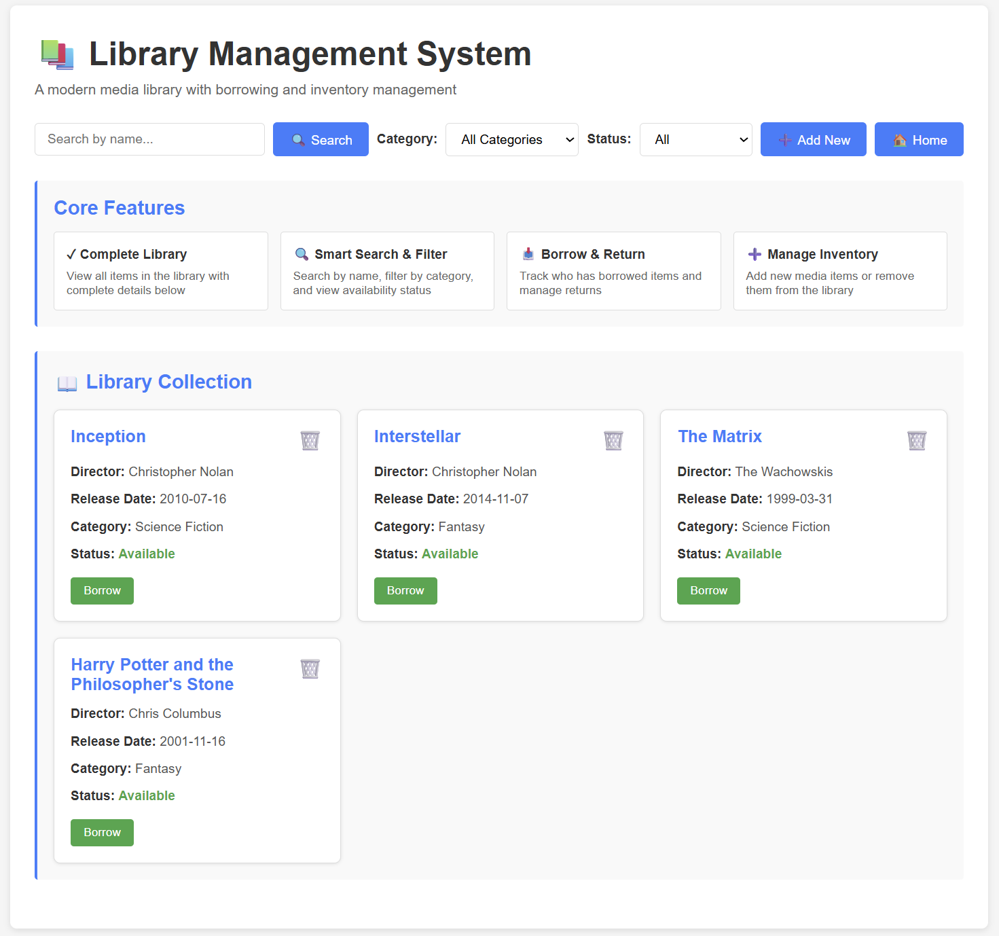
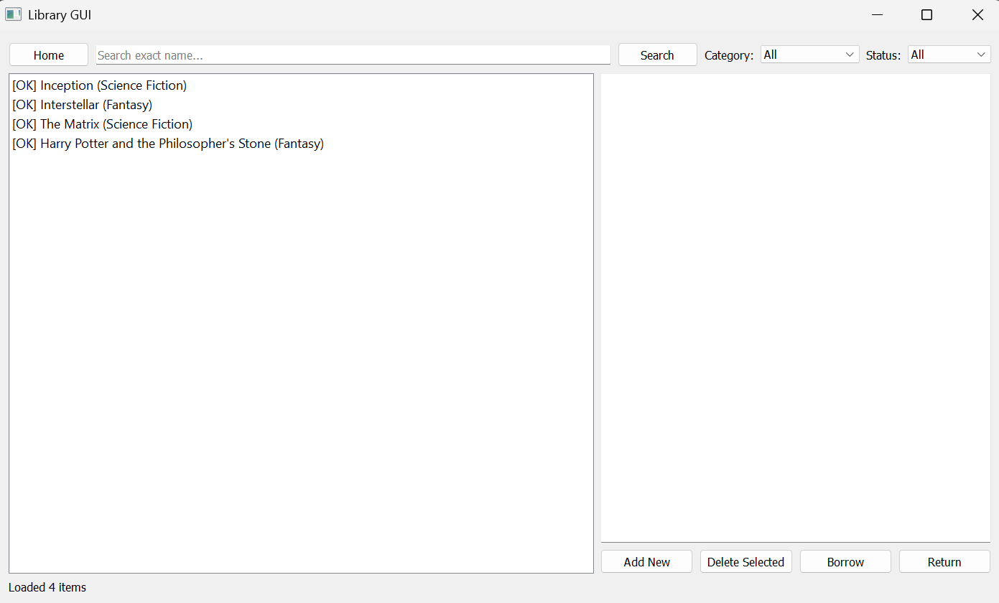

A modern media library with borrowing and inventory management for films
Film Library Management System The Film Library Management System is a modern, full-stack application built with Python and Flask that allows users to browse, search, borrow, and manage a complete collection of films. Designed with simplicity and efficiency in mind, the system presents each movie with rich details including director, release date, category, and real-time availability.
A clean, responsive web interface makes it easy to filter films by category or status, search by name, and perform key actions like borrowing or returning items with a single click. The project also includes a desktop version built with Tkinter, demonstrating flexibility across platforms and a strong understanding of UI/UX principles.
This project highlights full-stack development skills, combining backend logic, database management, and modern front-end design. It not only functions as a practical media-tracking tool but also showcases the ability to build polished, user-friendly software from the ground up.

